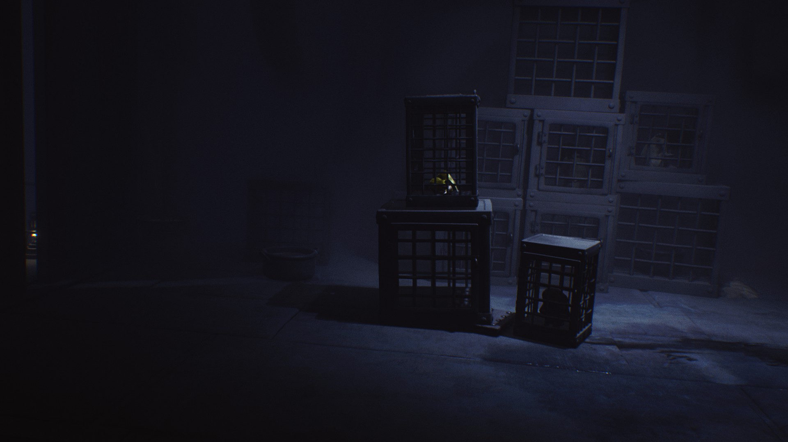

Little Nightmares
Author: Mason Mullanax
Date Published: Oct 24th, 2017
The devlopers must have misnamed this game, its not a little nightmare, its an ungodly nightmare. The true nightmare in Little Nightmares and the greatest challenge you'll face is the gameplay. This game certainly aims to be an experience rather than a game, which in and of itself, I don't consider to be a bad thing. Journey, Abzu, and Inside remain some of my favorite "for the experience" games. What makes this game different from those, are the levels of frustration and inconsistency that rear their heads from the start. First and foremost, a game that aims to be "for the experience" needs to have solid controls, so the player can feel completely immersed. Little Nightmares fails here with help from its lack of depth perception. On your first playthrough, you will no doubt be constantly taken out of the experience becuase you fell off a ledge. I understand that even in games that you play "for the experience" there must be some sort of win-lose state and difficulty, but I don't believe the developers intended traversing across levels to be such a tedius and frustrating time. Within minutes of starting the game, you will be faced with a section in which you must walk along a path of wooden platforms. Its clear which way you are meant to go, and its clear what the player must do to get there. However, you must battle both the controls and camera to get there, which can often lead to the player plunging to their death. This is among the most egregious ways of killing a player. Ideally, a player who knows what to do and how to do it should be rewarded with progress, and but this game often strays away from that. The terrible controls and camera don't just affect the player's movement either, they combine to make some of the most frustrating "puzzles" I have seen in a game. In the first chapter there is a puzzle which involves a seesaw which the player uses to reach a high ledge. There are 'ABC' blocks scattered around the floor that you can pick up and throw. In this instance, I knew exactly what I needed to do: throw the blocks on one end of the seesaw to act as a weight so I can climb up the other side and progress. Puzzle solved, right? Well, no. You must first face dreaded camera and lack of depth perception. The blocks never quite land where you expect them to and aiming is frustratingly hard. It's artificial difficulty. The puzzle is simple and only becomes challenging because of an unrelated design desicion.
Later on, gameplay involves short chase sequences. I found these to be very inconsistent. Essentially, you run from hiding spot to hiding spot trying not to be captured by the flappy-skinned chef. You can hide under tables and small spaces to escape, but thats where the inconsistency starts to show itself. For Whatever reason, the player can be nabbed under some tables, but not others. Visually, it seems there is no logic to this. Tables that are unsafe provide the same amount of space as tables that are safe. Whenever the chef reaches to grab you, he clips through the table anyways, so it's not as if he just has an easier time reaching you under unsafe tables. Besides the nit picky problems with chase sequences, they just don't give you the feeling of stress you get from a good chase. The game obviously expects these to get your heart racing as the sound of a heartbeat begins to play. But these chases just aren't as exciting as the game believes them to be. They are easy apart from the trial and error of finding which spaces are safe to hide in. And that's precisely where the games core problems lie: the trial and error approach.
The problem with a trial and error approach in games "for the experience" is that an error takes you directly out of of the experience. In isolated instances this can actually work for this type of game. For example, the dragon section in Journey the player runs from shelter to shelter, away from the dragon's gaze. If you mistime your movement the dragon will swallow you up, but instead of sending you to a loading screen, you lose part of your cape, which by the end of the game, doesn't matter anyways. It doesn't take you out of the experience or and make you reexperience sections, you've done already. In other words, its not frustrating.

So far I've neglected to talk about the visual and audio direction of the game. This is where the game shines. Visually, the game looks great. ITs an interesting world to explore, with unique charaters and locations that really drive home the nightmarish quality the game wants to achieve. The ambient music fits seemlessly with the visuals to make it a cohesive experience. Unfortunately, when combined with poor handling and bad gameplay desicions, it just does not make for a game work playing. Even on sale for about $5, this game is not worth playing. I left feeling nothing but frustration and relief from being finished with it. Ultimately, this is not an experience I would recommend purchasing. Instead, I recommend finding a "Let's Play" series on YouTube or Twitch that will let you experience the fantastic visuals and audio, without having to trudge through the gameplay.
Overall Score: 2/10
Watchability: 7/10